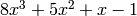

Módulos¶
Cargando módulos¶

Un módulo de Haskell es una colección de funciones, tipos y clases de tipos relacionadas entre si. Un programa Haskell es una colección de módulos donde el módulo principal carga otros módulos y utiliza las funciones definidas en ellos para realizar algo. Tener el código divido en módulos tiene bastantes ventajas. Si un módulo es lo suficientemente genérico, las funciones que son exportadas pueden ser utilizadas en una gran variedad de programas. Si tu código esta separado en módulos que no dependen mucho entre ellos (también decimos que están débilmente acoplados), luego puedes reutilizarlos. Esto hace que la tarea de programar sea más manejable teniendo ya que está todo dividido en varias partes, cada una con su propio propósito.
La librería estándar de Haskell está dividida en varios módulos, cada uno de ellos está formado por funciones y tipos que de alguna forma están relacionados y sirven para propósito común. Existe un módulo para manipular listas, un módulos para la programación concurrente, un módulo para trabajar con números complejos, etc. Todas las funciones, tipos y clases de tipos con las que hemos trabajado hasta ahora son parte del módulo Prelude, el cual es importado por defecto. En este capítulo vamos a ver unos cuantos módulos útiles y sus respectivas funciones. Pero primero, vamos a ver como se importan los módulos.
La sintaxis para importar módulos en un script de Haskell es import <module name>. Debe aparecer antes de que definamos cualquier función, así que las importaciones de módulos suelen estar al principio de los ficheros. Un script puede, obviamente, importar varios módulos. Simplemente hay que poner cada import en líneas separadas. Vamos a importar el módulo Data.List, el cual contiene un puñado de útiles funciones para trabajar con listas, y utilizaremos una función que exporta dicho módulo para crear una función que nos diga cuantos elementos únicos hay en una lista.
import Data.List
numUniques :: (Eq a) => [a] -> Int
numUniques = length . nub
Cuando realizamos import Data.List, todas las funciones que Data.List exporta están disponibles en el espacio de nombres global. Esto significa que podemos acceder a todas estas funciones desde nuestro script. nub es una función que está definida en Data.List la cual toma una lista y devuelve otra sin elementos duplicados. Componer length y nub haciendo length . nub produce una función equivalente a \xs -> length (nub xs).
También puedes importar módulos y utilizarlos cuando estamos trabajando con GHCi. Si estamos en una sesión de GHCi y queremos utilizar las funciones que exporta Data.List hacemos esto:
ghci> :m + Data.List
Si queremos cargar varios módulos dentro de GHCi no tenemos porque utilizar :m + varias veces, simplemente podemos cargar varios módulos de golpe:
ghci> :m + Data.List Data.Map Data.Set
Sin embargo, si ya has cargado un script que importa algún módulo, no tienes que utilizar :m + para poder utilizarlo.
Si únicamente necesitas algunas funciones de un módulo, puedes seleccionarlas para que solamente se importen dichas funciones. Si queremos importan solo las funciones nub y sort de Data.List hacemos lo siguiente:
import Data.List (nub, sort)
También puede importar todas las funciones de un módulo excepto algunas seleccionadas. Normalmente esto se utiliza cuando tenemos varios módulos que exportan una función con el mismo nombre y nos queremos librar de una de ellas. Digamos que ya tenemos una función llamada nub y queremos importar todas las funciones de Data.List excepto la función nub:
import Data.List hiding (nub)
Otra forma de tratar con las colisiones de nombres es con las importaciones cualificadas. El módulo Data.Map, que ofrece una estructura de datos para buscar valores por clave, exporta un montón de funciones con nombres iguales a las funciones de Prelude, como filter o null. Así que cuando importamos Data.Map y llamamos a filter, Haskell no sabe a que función llamar. Aquí tienes como lo solucionamos:
import qualified Data.Map
De esta forma, si queremos referirnos a la función filter de Data.Map, tenemos que usar Data.Map.filter, mientras que si usamos simplemente filter nos estamos referimos al filtro normal que todos conocemos. Escribir Data.Map delante de todas las funciones es bastante pesado. Por este motivo podemos renombrar una importación cualificada con algo un poco más corto:
import qualified Data.Map as M
De esta forma, para referirnos a la función filter de Data.Map solo tenemos que usar M.filter.
Puede usar es útil referencia para ver que módulos están en la librería estándar. Una forma de obtener información acerca de Haskell es simplemente hacer click por la referencia de la librería estándar y explorar sus módulos y sus funciones. También puedes ver el código fuente de cada módulo. Leer el código fuente de algunos módulos es una muy buena forma de aprender Haskell.
Puedes buscar funciones o buscar donde están localizadas usando Hoogle. Es un increíble motor de búsqueda de Haskell. Puedes buscar por nombre de función, nombre de módulo o incluso por la definición de tipo de una función.
Data.List¶
El módulo Data.List trata exclusivamente con listas, obviamente. Ofrece funciones muy útiles para trabajar con listas. Ya hemos utilizado alguna de estas funciones (como map y filter) ya que el módulo Prelude exporta algunas funciones de Data.List por conveniencia. No hace falta importar el módulo Data.List de forma cualificada porque no colisiona con ningún nombre de Prelude excepto por los que ya toma este de Data.List. Vamos a dar un vistazo a algunas funciones que aún no hemos conocido.
intersperse toma un elemento y una lista pone ese elemento entre cada par de elementos de la lista. Una demostración:
ghci> intersperse '.' "MONKEY" "M.O.N.K.E.Y" ghci> intersperse 0 [1,2,3,4,5,6] [1,0,2,0,3,0,4,0,5,0,6]intercalate toma una lista y una listas de listas. Inserta la primera lista entre todas las demás lista, dando como resultado una única lista.
ghci> intercalate " " ["hey","there","guys"] "hey there guys" ghci> intercalate [0,0,0] [[1,2,3],[4,5,6],[7,8,9]] [1,2,3,0,0,0,4,5,6,0,0,0,7,8,9]transpose transpone una lista de listas. Si miras la lista de listas como una matriz 2D, las columnas se convierten en filas y viceversa.
ghci> transpose [[1,2,3],[4,5,6],[7,8,9]] [[1,4,7],[2,5,8],[3,6,9]] ghci> transpose ["hey","there","guys"] ["htg","ehu","yey","rs","e"]Supongamos que tenemos los polinomios
,
y  y queremos sumarlos. Podemos usar las listas [0,3,5,9], [10,0,0,9] y [8,5,1,-1] para representarlos en Haskell. Ahora, para sumarlos lo único que tenemos que hacer es:
ghci> map sum $ transpose [[0,3,5,9],[10,0,0,9],[8,5,1,-1]] [18,8,6,17]Cuando transponemos estas tres listas, las potencias cúbicas están en la primera fila, los cuadrados en la segunda fila, etc. Al mapear sum sobre esto produce el resultado que buscamos.

foldl' y foldl1' son versiones estrictas de sus respectivas versiones perezosas. Cuando usamos pliegues perezosos sobre listas muy grandes solemos obtener errores de desbordamiento de pila. El motivo de que suceda esto es que dada la naturaleza de los pliegues perezosos, el valor acumulador no es actualizado hasta que se realiza el pliegue. Lo que en realidad pasa es que el acumulador hace un especie de promesa de que él calculará el valor cuando se le pide que produzca un resultado (a esto también se le llama thunk). Esto pasa para cada valor intermedio del acumulador y todos esos thunks desbordan la pila. Los pliegues estrictos no sufren de este error ya que van calculando de verdad los valores intermedios según recorren la lista en lugar de de llenar la pila con thunks. Ya sabes, si alguna vez te encuentras con errores de desbordamiento de pila mientras realizas un pliegue, prueba estas funciones.
concat aplana una lista de listas en una simple lista con los mismos elementos.
ghci> concat ["foo","bar","car"] "foobarcar" ghci> concat [[3,4,5],[2,3,4],[2,1,1]] [3,4,5,2,3,4,2,1,1]Básicamente elimina un nivel de anidamiento. Si quieras aplanar completamente [[[2,3],[3,4,5],[2]],[[2,3],[3,4]]], que es una lista de listas de listas, tienes que aplanarla dos veces.
concatMap es lo mismo que hacer primero un mapeado con una función a una lista y concatenar todos los resultados.
ghci> concatMap (replicate 4) [1..3] [1,1,1,1,2,2,2,2,3,3,3,3]and toma una lista de booleanos y devuelve True solo si todos los elementos de la lista son True.
ghci> and $ map (>4) [5,6,7,8] True ghci> and $ map (==4) [4,4,4,3,4] Falseor es como and solo que devuelve True solo si existe algún elemento True en la lista.
ghci> or $ map (==4) [2,3,4,5,6,1] True ghci> or $ map (>4) [1,2,3] Falseany y all toman un predicado y una lista y comprueban si el predicado se satisface para algún o para todos los elementos respectivamente. Normalmente usamos estas funciones en lugar de tener que mapear un lista y luego usar all o or.
ghci> any (==4) [2,3,5,6,1,4] True ghci> all (>4) [6,9,10] True ghci> all (`elem` ['A'..'Z']) "HEYGUYSwhatsup" False ghci> any (`elem` ['A'..'Z']) "HEYGUYSwhatsup" Trueiterate toma una función y un valor inicial. Aplica esa función al valor inicial, luego aplica la función al resultado anterior, luego aplica es misma función al resultado anterior otra vez, etc. Devuelve todos los resultados en forma de lista infinita.
ghci> take 10 $ iterate (*2) 1 [1,2,4,8,16,32,64,128,256,512] ghci> take 3 $ iterate (++ "haha") "haha" ["haha","hahahaha","hahahahahaha"]splitAt toma un número y una lista. Luego divide la lista por el índice indicado y devuelve una dupla con ambas listas.
ghci> splitAt 3 "heyman" ("hey","man") ghci> splitAt 100 "heyman" ("heyman","") ghci> splitAt (-3) "heyman" ("","heyman") ghci> let (a,b) = splitAt 3 "foobar" in b ++ a "barfoo"takeWhile es una función realmente útil. Toma elemento de una lista mientras el predicado se mantenga a cierto, y luego cuando encuentra un elemento que no satisface el predicado, corta la lista.
ghci> takeWhile (>3) [6,5,4,3,2,1,2,3,4,5,4,3,2,1] [6,5,4] ghci> takeWhile (/=' ') "This is a sentence" "This"Digamos que queremos saber la suma de todas las potencias cúbicas que están por debajo de 10.000. No podemos mapear (^3) a [1..], aplicar un filtro y luego sumar el resultado ya que filtrar una lista infinita nunca termina. Tu sabes que todos los elementos son ascendentes pero Haskell no lo sabe. Por eso usamos esto:
ghci> sum $ takeWhile (<10000) $ map (^3) [1..] 53361Aplicamos (^3) a una lista infinita y una vez que una elemento mayor que 10.000 es encontrado, se corta la lista. De esa forma, luego podemos sumar la lista fácilmente.
dropWhile es similar, solo que descarta elemento mientras el predicado se cumpla. Una vez que el predicado se evalúa a False, devuelve el resto de la lista. ¡Una función encantadora!
ghci> dropWhile (/=' ') "This is a sentence" " is a sentence" ghci> dropWhile (<3) [1,2,2,2,3,4,5,4,3,2,1] [3,4,5,4,3,2,1]Nos dan una lista que representa los valores de las acciones por fechas. La lista contiene 4-tuplas cuyo primer elemento es el valor de la acción, el segundo el año, el tercero es el mes y el cuarto el día. Si quisiéramos saber cuando una acción alcanzara por primera vez los 1000$, podríamos usar esto:
ghci> let stock = [(994.4,2008,9,1),(995.2,2008,9,2),(999.2,2008,9,3),(1001.4,2008,9,4),(998.3,2008,9,5)] ghci> head (dropWhile (\(val,y,m,d) -> val < 1000) stock) (1001.4,2008,9,4)span es un tipo de takeWhile, solo que devuelve una dupla de listas. La primera lista contiene todo lo que tendría la lista resultante de takeWhile. La lista contendría toda la lista que hubiese sido cortada.
ghci> let (fw, rest) = span (/=' ') "This is a sentence" in "First word:" ++ fw ++ ", the rest:" ++ rest "First word: This, the rest: is a sentence"Mientras que span divide la lista cuando el predicado deja de cumplirse, break divide la lista cuando el predicado se cumple por primera vez. Equivale a span (not . p).
ghci> break (==4) [1,2,3,4,5,6,7] ([1,2,3],[4,5,6,7]) ghci> span (/=4) [1,2,3,4,5,6,7] ([1,2,3],[4,5,6,7])Cuando usamos break, la segunda lista comenzará con el primer elemento que satisfaga el predicado.
sort simplemente ordena una lista. El tipo de elementos que contenga la lista tiene que ser miembro de clase de tipos Ord, ya que si los elementos de la lista no se pueden poner en algún tipo de orden, la lista no se puede ordenar.
ghci> sort [8,5,3,2,1,6,4,2] [1,2,2,3,4,5,6,8] ghci> sort "This will be sorted soon" " Tbdeehiillnooorssstw"group toma una lista y agrupa los elementos adyacentes que sean iguales en sublistas.
ghci> group [1,1,1,1,2,2,2,2,3,3,2,2,2,5,6,7] [[1,1,1,1],[2,2,2,2],[3,3],[2,2,2],[5],[6],[7]]Si ordenamos una lista antes de agruparla podemos obtener cuantas veces se repite cada elemento.
ghci> map (\l@(x:xs) -> (x,length l)) . group . sort $ [1,1,1,1,2,2,2,2,3,3,2,2,2,5,6,7] [(1,4),(2,7),(3,2),(5,1),(6,1),(7,1)]inits y tails son como init y tail, solo que se aplican recursivamente hasta que no queda nada en la lista. Observa:
ghci> inits "w00t" ["","w","w0","w00","w00t"] ghci> tails "w00t" ["w00t","00t","0t","t",""] ghci> let w = "w00t" in zip (inits w) (tails w) [("","w00t"),("w","00t"),("w0","0t"),("w00","t"),("w00t","")]Vamos a usar un pliegue para implementar una búsqueda de una sublista dentro de una lista.
search :: (Eq a) => [a] -> [a] -> Bool search needle haystack = let nlen = length needle in foldl (\acc x -> if take nlen x == needle then True else acc) False (tails haystack)Primero llamamos a tails con la lista en la que estamos buscando. Luego recorremos cada cola y vemos si empieza con lo que estamos buscando.
Con esto, en realidad hemos creado una función que se comporta como isInfixOf. isInfixOf busca una sublista dentro de una lista y devuelve True si la sublista que estamos buscando está en algún lugar de la lista.
ghci> "cat" `isInfixOf` "im a cat burglar" True ghci> "Cat" `isInfixOf` "im a cat burglar" False ghci> "cats" `isInfixOf` "im a cat burglar" FalseisPrefixOf y isInfixOf buscan una sublista desde el principio o des el final de una lista, respectivamente.
ghci> "hey" `isPrefixOf` "hey there!" True ghci> "hey" `isPrefixOf` "oh hey there!" False ghci> "there!" `isSuffixOf` "oh hey there!" True ghci> "there!" `isSuffixOf` "oh hey there" Falseelem y notElem comprueban si un elemento está dentro de una lista.
partition toma una lista y un predicado y devuleve una dupla de listas. La primera lista contiene todos los elementos que satisfacen el predicado, la segunda todos los que no.
ghci> partition (`elem` ['A'..'Z']) "BOBsidneyMORGANeddy" ("BOBMORGAN","sidneyeddy") ghci> partition (>3) [1,3,5,6,3,2,1,0,3,7] ([5,6,7],[1,3,3,2,1,0,3])Es importante conocer las diferencias que tiene esta función con span y break.
ghci> span (`elem` ['A'..'Z']) "BOBsidneyMORGANeddy" ("BOB","sidneyMORGANeddy")Tanto span como break terminan cuando encuentran el primer elemento que satisface o no satisface el predicado, partition recorre la lista entera y la va dividiendo según el predicado.
find toma una lista y un predicado y devuelve el primer elemento que satisface el predicado. Pero, devuelve el elemento envuelto en un valor Maybe. Veremos con más detalles los tipos de datos algebraicos en el siguiente capítulo pero de momento esto es todo lo que necesitas saber: un valor Maybe puede ser o un Just algo o Nothing. De la misma forma que una lista puede ser o una lista vacía o una con elementos, un valor Maybe puede ser o un elemento o ninguno. Y como el tipo de la lista dice que, por ejemplo, una lista de enteros es [Int], el tipo de un Maybe que contenga un entero es Maybe Int. De todas formas, vamos a ver la función find en acción.
ghci> find (>4) [1,2,3,4,5,6] Just 5 ghci> find (>9) [1,2,3,4,5,6] Nothing ghci> :t find find :: (a -> Bool) -> [a] -> Maybe aFíjate en el tipo de find. Su resultado es del tipo Maybe a. Esto es parecido a tener algo del tipo [a], solo que un valor del tipo Maybe solo puede tener o un elemento o ninguno, mientras que una lista puede tener ningún elemento, un solo elemento, o varios de ellos.
Recuerda cuando estábamos buscando la primera vez que una acción superaba los 1000$. Utilizamos head (dropWhile (\(val,y,m,d) -> val < 1000)` stock. Recuerda también que head no es una función segura. ¿Qué pasaría si nunca hubiésemos alcanzado los 1000$? dropWhile hubiese devuelto una lista vacía y aplicar head en una lista vacía solo da un resultado, un error. Sin embargo, si usamos find (\(val,y,m,d) -> val > 1000) stock, podemos estar mucho más tranquilos. Si nuestras acciones nunca superan los 1000$ (es decir, ningún elemento satisface el predicado), obtendremos Nothing, y si sí lo hacen obtendremos una respuesta válida, como Just (1001.4,2008,9,4).
elemIndex es parecido a elem, solo que no devuelve un valor booleano. Quizá devuelva el índice del elemento que estamos buscando. Si elemento no está en la lista devolverá Nothing.
ghci> :t elemIndex elemIndex :: (Eq a) => a -> [a] -> Maybe Int ghci> 4 `elemIndex` [1,2,3,4,5,6] Just 3 ghci> 10 `elemIndex` [1,2,3,4,5,6] NothingelemIndices es como elemIndex, solo que devuelve una lista de índices en caso de que el elemento que estamos buscando aparezca varias veces por la lista. Como estamos usando una lista para representar los índices, no necesitamos el tipo Maybe, ya que el caso de que no se encuentre nada puede ser representado con la lista vacía, la cual es sinónimo de Nothing.
ghci> ' ' `elemIndices` "Where are the spaces?" [5,9,13]findIndex es como find, solo que puede devolver el índice del primer elemento que satisfaga el predicado. findIndices devuelve el indice de todos los elementos que satisfagan el predicado en forma de lista.
ghci> findIndex (==4) [5,3,2,1,6,4] Just 5 ghci> findIndex (==7) [5,3,2,1,6,4] Nothing ghci> findIndices (`elem` ['A'..'Z']) "Where Are The Caps?" [0,6,10,14]Ya hemos hablado de zip y de zipWith. Vimos que estas funciones combinaban dos listas, ya sea con una dupla o con una función binaria (en el sentido de que toma dos parámetros) ¿Y si queremos combinar tres listas? ¿O combinar tres listas con una función que toma tres parámetros? Bueno, para eso tenemos zip3, zip4, etc. y zipWith3, zipWith4, etc. Estas variantes llegan hasta 7. Esto puede parece algún tipo arreglo, pero funciona muy bien en la realidad, ya que no hay tantas ocasiones en las que queramos combinar 8 listas. También existe una forma muy ingeniosa de combinar un número infinito de listas, pero no hemos avanzado aún lo suficiente como para explicarlo aquí.
ghci> zipWith3 (\x y z -> x + y + z) [1,2,3] [4,5,2,2] [2,2,3] [7,9,8] ghci> zip4 [2,3,3] [2,2,2] [5,5,3] [2,2,2] [(2,2,5,2),(3,2,5,2),(3,2,3,2)]Como las otras funciones, la listas resultantes son tan largas como la la lista más corta.
lines es una función muy útil cuando tratamos con algún tipo de entrada, como ficheros. Toma una cadena y devuelve cada línea de esa cadena separada en una lista.
ghci> lines "first line\nsecond line\nthird line" ["first line","second line","third line"]'\n' es el carácter que representa el salto de línea unix. Las barras invertidas tienen un significado especial en las cadenas y caracteres de Haskell.
unlines es la función inversa de lines. Toma una lista de cadenas y las une utilizando un '\n'.
ghci> unlines ["first line", "second line", "third line"] "first line\nsecond line\nthird line\n"words y unwords sirven para separar separar una línea de texto por palabras. Muy útil.
ghci> words "hey these are the words in this sentence" ["hey","these","are","the","words","in","this","sentence"] ghci> words "hey these are the words in this\nsentence" ["hey","these","are","the","words","in","this","sentence"] ghci> unwords ["hey","there","mate"] "hey there mate"Ya hemos visto antes nub. Toma una lista y elimina los elementos repetidos, devolviendo una lista en la que cada elemento es único. Esta función tiene un nombre muy raro. Resulta que nub significa una pequeña parte o una parte esencial de algo. En mi opinión, creo que deberían usar nombres reales para las funciones en lugar de palabras ancestrales.
ghci> nub [1,2,3,4,3,2,1,2,3,4,3,2,1] [1,2,3,4] ghci> nub "Lots of words and stuff" "Lots fwrdanu"delete toma un elemento y una lista y elimina el primer elemento idéntico de esa lista.
ghci> delete 'h' "hey there ghang!" "ey there ghang!" ghci> delete 'h' . delete 'h' $ "hey there ghang!" "ey tere ghang!" ghci> delete 'h' . delete 'h' . delete 'h' $ "hey there ghang!" "ey tere gang!"\\ es la función división. Funciona como una división basicamente. Elimina la primera ocurrencia de la lista de la derecha de los elementos de la lista de la izquierda.
ghci> [1..10] \\ [2,5,9] [1,3,4,6,7,8,10] ghci> "Im a big baby" \\ "big" "Im a baby"[1..10] \\ [2,5,9] es como hacer delete 2 . delete 5 . delete 9 $ [1..10].
union funciona como la unión de conjuntos. Devuelve la unión de dos listas. Básicamente recorre cada elemento de la segunda lista y lo añade a la primera lista si está aún no lo contenía. Ten cuidado, los duplicados solo son eliminados de la primera lista.
ghci> "hey man" `union` "man what's up" "hey manwt'sup" ghci> [1..7] `union` [5..10] [1,2,3,4,5,6,7,8,9,10]intersect funciona como la intersección de conjuntos. Devuelve los elementos que están en ambas listas.
ghci> [1..7] `intersect` [5..10] [5,6,7]insert toma un elemento y una lista que puede ser ordenada e inserta este elemento en la última posición donde sea menor o igual que el elemento siguiente. En otras palabras, insert recorrerá la lista hasta que encuentre un elemento mayor que el elemento que estamos insertando, y lo insertará antes de dicho elemento.
ghci> insert 4 [3,5,1,2,8,2] [3,4,5,1,2,8,2] ghci> insert 4 [1,3,4,4,1] [1,3,4,4,4,1]El 4 es insertado justo después del 3 y antes del 5 en el primer ejemplo, y entre 3 y el 4 en el segundo.
Si usamos insert para introducir algo en una lista ordenada el resultado seguirá estando ordenado.
ghci> insert 4 [1,2,3,5,6,7] [1,2,3,4,5,6,7] ghci> insert 'g' $ ['a'..'f'] ++ ['h'..'z'] "abcdefghijklmnopqrstuvwxyz" ghci> insert 3 [1,2,4,3,2,1] [1,2,3,4,3,2,1]
Lo que length, take, drop, splitAt, !! y replicate tienen en común es que toman un Int como parámetro (o lo devulen), incluso aunque estas funciones podrían ser más genéricas y útiles si simplemente tomaran cualquier tipo que fuera parte de las clases de tipos Integral o Num (dependiendo de las funciones). Lo hacen por mótivos hístoricos. Probablemente si arreglaran esto dejaría de funcionar mucho código ya existente. Este es el motivo por el que Data.List tiene sus propias variantes más genéricas, se llaman genericLength, genericTake, genericDrop, genericSplitAt, genericIndex y genericReplicate. Por ejemplo, length tiene el tipo length :: [a] -> Int. Si intentamos obtener la media de una lista de número usando let xs = [1..6] in sum xs / length xs obtendremos un error de tipo, ya que no podemos usar / con un Int. Por otra parte genericLength tiene el tipo genericLength :: (Num a) => [b] -> a. Como Num puede comportarse como un número en coma flotante, obtener la media haciendo let xs = [1..6] in sum xs / genericLength xs funciona perfectamente.
Las funciones nub, delete, union, intersect y group tienen sus repectivas funciones más generales llamadas nubBy, deleteBy, unionBy, intersectBy y groupBy. La diferencia entre ellas es que el primer conjunto de funciones usa == para comprobar la igualdad, mientras que el otro conjunto toman una función de igualdad y comparan elementos utilizando esta función. group es lo mismo que groupBy (==).
Por ejemplo, digamos que tenemos una lista que contiene el valor de una función para cada segundo. Queremos segmentar la lista en sublistas basandonos en cuando un valor estaba por debajo de cero y cuando estaba por encima. Si usaramos un group normal simplemente agruparía lod valores iguales adyacentes. Pero lo que nosotros queremos es agruparlos según vaya siendo positivos o no. Aqui es donde entra en juengo groupBy. La función de igualdad que toman las funciones con el sufijo By deben tomar dos parámetros del mismo tipo y devolver True si consideran que son iguales por su propio criterio.
ghci> let values = [-4.3, -2.4, -1.2, 0.4, 2.3, 5.9, 10.5, 29.1, 5.3, -2.4, -14.5, 2.9, 2.3]
ghci> groupBy (\x y -> (x > 0) == (y > 0)) values
[[-4.3,-2.4,-1.2],[0.4,2.3,5.9,10.5,29.1,5.3],[-2.4,-14.5],[2.9,2.3]]
De est forma podemos ver claramente que secciones son positivas y cuales negativas. La función de igualdad que hemos utilizado solo devuleve True cuando los dos valores son positivos o son los dos negativos. Esta función de igualdad también se puede escribir como \x y -> (x > 0) && (y > 0) || (x <= 0) && (y <= 0) aunque para mi gusto la primera es más legible. Existe incluso una forma más clara de escribir funciones de igualdad para estas funciones si importamos la función on del módulo Data.Function. on se define como:
on :: (b -> b -> c) -> (a -> b) -> a -> a -> c
f `on` g = \x y -> f (g x) (g y)
Así que (==) `on` (> 0) devuelve una función de igualdad que se comporta igual que \x y -> (x > 0) == (y > 0). on se utiliza mucho con todas estas funciones, ya que con ella, podemos hacer cosas como:
ghci> groupBy ((==) `on` (> 0)) values
[[-4.3,-2.4,-1.2],[0.4,2.3,5.9,10.5,29.1,5.3],[-2.4,-14.5],[2.9,2.3]]
¡Muy legible! Puedes leerlo de golpe: Agrupa esto por igualdad en si los elementos son mayores que cero.
De forma similar, la funciones sort, insert, maximum y minimum también tienen sus equivalentes más generales. Fucniones como groupBy toman funciones que determinan si dos elemento son iguales o no. sortBy, insertBy, maximumBy y minimumBy toman una función que determina si si un elemento es mayor, igual o menor que otro. El tipo de sortBy es sortBy :: (a -> a -> Ordering) -> [a] -> [a]. Si recuerdas, el tipo Ordering puede tomar los valores GT, EQ y LT. sort es equivalente a sort compare, ya que comapare simplemente toma dos elementos cuyos tipos esten en la clase de tipos Ord y devuelve su relación de orden.
Las listas pueden ser comparadas por orden lexicográfico ¿Y si tenemos una lista de listas y no queremos ordenarlas en base al contenido de las listas interiores sino a sus tamaños? Bueno, como probablemente hayas imaginado, para eso está la función sortBy:
ghci> let xs = [[5,4,5,4,4],[1,2,3],[3,5,4,3],[],[2],[2,2]]
ghci> sortBy (compare `on` length) xs
[[],[2],[2,2],[1,2,3],[3,5,4,3],[5,4,5,4,4]]
¡Increíble! compare `on` length, eso se lee casi como el inglés real. Si no estás seguro de como funciona compare `on` length aquí, equivalente a \x y -> length x `compare` length y. Cuando tratamos con funciones que tienen el sufijo By que toman funciones de igualdad normalmente utilizamos (==) `on` algo y cuando tratamos con las que toman funciones de orden solemos utilizar compare `on` algo.
Data.Char¶

El módulo Data.Char contiene lo que su nombre sugiere. Exporta funciones que tratan con caracteres. También es útil cuando mapeamos o filtramos cadenas ya que al fin y al cabo son listas de caracteres.
Data.Char exporta un buen puñado de predicados sobre caracteres. Esto es, funciones que toman un carácter y nos dicen si una suposición acerca de él es verdadera o falsa. Aquí los tienes:
- isControl comprueba si un carácter es de control o no.
- isSpace comprueba si un carácter es uno de los caracteres de espacio en blanco. Eso incluye espacios, tabuladores, saltos de línea, etc.
- isLower comprueba si un carácter está en minúsculas.
- isUpper comprueba si un carácter está en mayúsculas.
- isAlpha comprueba si un carácter es una letra.
- isAlphaNum comprueba si un carácter es una letra o un número.
- isPrim comprueba si un carácter es imprimible. Los caracteres de control, por ejemplo, no lo son.
- isDigit comprueba si un carácter es un dígito.
- isOctDigit comprueba si un carácter es un dígito octal.
- isHexDigit comprueba si un carácter es un dígito hexadecimal.
- isLetter comprueba si un carácter es una letra.
- isMark comprueba si un carácter es una marca Unicode. Esto caracteres que se combinan con sus adyacentes.
- isNumber comprueba si un carácter numérico.
- isPunctuation comprueba si un carácter es un signo de puntuación.
- isSymbol comprueba si un carácter es símbolo matemático o el de una moneda.
- isSeparator comprueba si un carácter es un espacio o un separador Unicode.
- isAscii comprueba si un carácter es uno de los primeros 128 caracteres del conjunto de caracteres Unicode.
- isLatin1 comprueba si un carácter es uno de los primeros 256 caracteres del conjunto de caracteres Unicode.
- isAsciiUpper comprueba si un carácter está en mayúsculas y además es ascii.
- isAsciiLower comprueba si un carácter está en minúsculas y además es ascii.
Todas estas funciones tienen el tipo Char -> Bool. La mayoría de las veces las usaras para filtrar cadenas o algo parecido. Por ejemplo, digamos que vamos a hacer un programa que toma un nombre de usuario y dicho nombre solo puede estar compuesto por caracteres alfanuméricos. Podemos usar la función all del módulo Data.List para determinar si el nombre es correcto:
ghci> all isAlphaNum "bobby283"
True
ghci> all isAlphaNum "eddy the fish!"
False
En caso de que no te acuerdes, all toma un predicado y devuelve True solo si dicho predicado se cumple para toda la lista.
También podemos utilizar la función isSpace para simular la función words del módulo Data.List.
ghci> words "hey guys its me"
["hey","guys","its","me"]
ghci> groupBy ((==) `on` isSpace) "hey guys its me"
["hey"," ","guys"," ","its"," ","me"]
Mmm... bueno, hace lo mismo que words pero nos dejamos algunos elementos que contienen un solo espacio ¿Qué podemos hacer? Ya se, vamos a filtrarlos.
ghci> filter (not . any isSpace) . groupBy ((==) `on` isSpace) $ "hey guys its me"
["hey","guys","its","me"]
Data.Char también exporta un tipo de dato parecido a Ordering. El tipo Ordering puede tener un valor LT, EQ o GT. Es una especie de enumeración. Describe una serie de posibles resultados dados al comparar dos elementos. El tipo GeneralCategory también es una enumeración. Representa una serie de categorías a las que puede pertenecer un carácter. La función principal para obtener la categoría de un carácter es generalCategory. Tiene el tipo generalCategory :: Char -> GeneralCategory. Existen 31 categorías diferentes así que no las vamos a mostrar, pero vamos a jugar un poco con esta función.
ghci> generalCategory ' '
Space
ghci> generalCategory 'A'
UppercaseLetter
ghci> generalCategory 'a'
LowercaseLetter
ghci> generalCategory '.'
OtherPunctuation
ghci> generalCategory '9'
DecimalNumber
ghci> map generalCategory " \t\nA9?|"
[Space,Control,Control,UppercaseLetter,DecimalNumber,OtherPunctuation,MathSymbol]
Como GeneralCategory forma parte de la clase de tipos Eq podemos hacer cosas como generalCategory c == Space.
Para terminar, aquí tienes unas cuantas funciones que convierten caracteres:
toUpper convierte un carácter a mayúsculas. Lo espacios, números y todo lo demás permanece igual.
toLower convierte un carácter a minúsculas.
toTitle es similar a toUpper excepto para una pocas letras.
digitToInt convierte un carácter a un Int. Para que funcione, el carácter debe estar entre los rangos '0'..'9', 'a'..'f' y 'A'..'F'.
ghci> map digitToInt "34538" [3,4,5,3,8] ghci> map digitToInt "FF85AB" [15,15,8,5,10,11]intToDigit es la función inversa de digitToInt. Toma un Int que este en el rango 0..15 y lo convierte a un carácter en minúsculas.
ghci> intToDigit 15 'f' ghci> intToDigit 5 '5'La función ord y chr convierte caracteres a sus respectivas representaciones numéricas y viceversa.
ghci> ord 'a' 97 ghci> chr 97 'a' ghci> map ord "abcdefgh" [97,98,99,100,101,102,103,104]La diferencia entre dos valores de ord de dos caracteres es igual a la diferencia que existe entre ellos dos en la tabla Unicode.
El cifrado César es un método primitivo para cifrar mensajes desplazando cada carácter un número fijo de posiciones en el alfabeto. Podemos crear una especie de cifrado César nosotros mismo, solo que no nos vamos a ceñir únicamente al alfabeto.
encode :: Int -> String -> String encode shift msg = let ords = map ord msg shifted = map (+ shift) ords in map chr shiftedPrimero, convertimos la cadena en una lista de número. Luego, le añadimos una cantidad constante a cada número y convertimos la lista de números resultantes en otra cadena de texto. Si te va más la composición, podías haber hecho lo mismo con map (chr . (+ shift) . ord) msg. Vamos a probar a codificar unos mensajes.
ghci> encode 3 "Heeeeey" "Khhhhh|" ghci> encode 4 "Heeeeey" "Liiiii}" ghci> encode 1 "abcd" "bcde" ghci> encode 5 "Marry Christmas! Ho ho ho!" "Rfww~%Hmwnxyrfx&%Mt%mt%mt&"Parece que está bien cifrado. Descifrar un mensaje es básicamente volver a poner los caracteres desplazados en su lugar.
decode :: Int -> String -> String decode shift msg = encode (negate shift) msgghci> encode 3 "Im a little teapot" "Lp#d#olwwoh#whdsrw" ghci> decode 3 "Lp#d#olwwoh#whdsrw" "Im a little teapot" ghci> decode 5 . encode 5 $ "This is a sentence" "This is a sentence"
Data.Map¶
Las listas de asociación (también llamadas diccionarios) son listas que son utilizadas para almacenar pares clave-valor donde el orden no importa. Por ejemplo, podemos tener una lista de asociación para almacenar números de teléfono, donde los números de telefono serían los valores y los nombres de la gente serían las claves. No nos importa el orden en el que esten almacenados, solo queremos obtener el número aducuado para cada persona.
La forma más obvia de representar una lista de asociación en Haskell sería utilizar una lista de duplas. El primer componente de las duplas sería la clave, y el segundo el valor. Aquí tienes un ejemplo de una lista de asociación de números de telefono:
phoneBook =
[("betty","555-2938")
,("bonnie","452-2928")
,("patsy","493-2928")
,("lucille","205-2928")
,("wendy","939-8282")
,("penny","853-2492")
]
A pesar de que esta alineación extraña, es simplemente un lista de duplas de cadenas. La tarea más común cuando trabajamos con listas de asociación es buscar un valor por clave. Vamos a crear una función que busque un valor dada una clave.
findKey :: (Eq k) => k -> [(k,v)] -> v
findKey key xs = snd . head . filter (\(k,v) -> key == k) $ xs
Muy simple. Esta función toma una clave y una lista, filtra la lista de forma que solo queden claves que coincidan con la clave que se le paso, obtiene el primer elemento de la lista resultante y luego devuelve el valor asociado. Pero ¿Qué pasa si la clave que estamos buscando no esta en la lista? Mmm... Si la clave no está en la lista, acabamos intentando aplicar head en una lista vacía, por lo que tendremos un error de ejecución. Sin embargo, debemos evitar que nuestros programas se rompan tan facilmente, así que vamos a usar el tipo Maybe. Si no encontramos la clave, devolvemos Nothing y en caso de que la encontremos, devolvemos Just algo, donde algo es el valor asociado a esa clave.
findKey :: (Eq k) => k -> [(k,v)] -> Maybe v
findKey key [] = Nothing
findKey key ((k,v):xs) = if key == k
then Just v
else findKey key xs
Fíjate en la declaración de tipo. Toma una clave que puede ser comparada por igualdad, una lista de asociación y puede devolver un valor. Suena bien.
Esta es una función recursiva de libro que opera con listas. Caso base, dividir una lista en cabeza y cola, llamada recursiva... Esto es un pliegue clásico, asi que vamos a implementarlo con un pliegue.
findKey :: (Eq k) => k -> [(k,v)] -> Maybe v
findKey key = foldr (\(k,v) acc -> if key == k then Just v else acc) Nothing
Nota
Normalmente es mejor usar un pligue en estos casos de recursión estándar sobre listas en lugar de una recursión explícita ya que resulta más legible y fácil de identificar. Todo el mundo sabe que se está realizando un pliegue cuando ve una llamada a foldr, pero toma un poco más de tiempo leer una recursión explícita.
ghci> findKey "penny" phoneBook
Just "853-2492"
ghci> findKey "betty" phoneBook
Just "555-2938"
ghci> findKey "wilma" phoneBook
Nothing

¡Funciona perfectamente! Si tenemos el número de una chica obtenemos dicho Just número, en otro caso obtenemos Nothing.
Acabamos de implementar la función lookup del módulo Data.List. Si queremos obtener el valor correspondiente a una clave solo tenemos que recorrer la lista hasta que la encontremos. El módulo Data.Tree ofrece listas de asociación mucho más eficientes (ya que están implementadas con árboles) y también ofrece un montón de funciones útiles. De ahora en adelante diremos que estamos trabajando con diccionarios en lugar de listas de asociación.
Debido a que Data.Map exporta funciones que colisionan con las de Prelude y Data.List, lo importaremos de forma cualificada.
import qualified Data.Map as Map
Pon esta sentencia en un script y luego cárgalo con GHCi.
Vamos a continuar y ver que tiene Data.Map para nosotros. Aquí tienes un resumen básico de las funciones.
La función fromList tomo una lista de asociación (en forma de lista) y devuelve un diccionario con las mismas asociaciones.
ghci> Map.fromList [("betty","555-2938"),("bonnie","452-2928"),("lucille","205-2928")] fromList [("betty","555-2938"),("bonnie","452-2928"),("lucille","205-2928")] ghci> Map.fromList [(1,2),(3,4),(3,2),(5,5)] fromList [(1,2),(3,2),(5,5)]En caso de que existan claves duplicadas en la lista de asociación, los duplicados son descartados. Este es la declaración de tipo de fromList:
Map.fromList :: (Ord k) => [(k, v)] -> Map.Map k vDice que toma una lista de duplas k y v y devuelve un diccionario que asocia las claves k con los valores v. Fíjate que cuando creábamos listas de asociación con listas normales, las claves solo tenían que ser igualables (su tipo pertenecía a la clase de tipos Eq) pero ahora tienen que ser ordenables. Esto es básicamente una restricción del módulo Data.Map. Necesita que las claves sean ordenables para que pueda organizarlas en un árbol.
Debes utilizar siempre el módulo Data.Map para las asociaciones clave-valor a no ser que las claves son sean de la clase de tipos Ord.
empty representa un diccionario vacío. No toma ningún parámetro, simplemente devuelve un diccionario vacío.
ghci> Map.empty fromList []insert toma una una clave, un valor y un diccionario y devuelve un nuevo diccionario exactamente igual al anterior, solo que contiene además la nueva clave-valor.
ghci> Map.empty fromList [] ghci> Map.insert 3 100 Map.empty fromList [(3,100)] ghci> Map.insert 5 600 (Map.insert 4 200 ( Map.insert 3 100 Map.empty)) fromList [(3,100),(4,200),(5,600)] ghci> Map.insert 5 600 . Map.insert 4 200 . Map.insert 3 100 $ Map.empty fromList [(3,100),(4,200),(5,600)]Podemos implementar nuestra propia función fromList usando únicamente un diccionario vacío, insert y un pliegue. Mira:
fromList' :: (Ord k) => [(k,v)] -> Map.Map k v fromList' = foldr (\(k,v) acc -> Map.insert k v acc) Map.emptyEs un pliegue bastante simple. Empezamos con un diccionario vacío y luego vamos plegando la lista desde la derecha, insertando nuevos pares clave-valor en el acumulador.
null comprueba si un diccionario está vacío.
ghci> Map.null Map.empty True ghci> Map.null $ Map.fromList [(2,3),(5,5)] Falsesize nos da el tamaño de un diccionario.
ghci> Map.size Map.empty 0 ghci> Map.size $ Map.fromList [(2,4),(3,3),(4,2),(5,4),(6,4)] 5singleton toma una clave y un valor y nos devuelve un diccionario que solo contiene esa clave.
ghci> Map.singleton 3 9 fromList [(3,9)] ghci> Map.insert 5 9 $ Map.singleton 3 9 fromList [(3,9),(5,9)]lookup funciona como la función lookup de Data.List, solo que opera con diccionarios en lugar de listas. Devuelve Just algo si encuentra la clave o Nothing en caso contrario.
member es un predicado que toma una clave y un diccionario y nos dice si dicha clave está contenida en el diccionario.
ghci> Map.member 3 $ Map.fromList [(3,6),(4,3),(6,9)] True ghci> Map.member 3 $ Map.fromList [(2,5),(4,5)] Falsemap y filter funcionan de forma similar a sus equivales de listas.
ghci> Map.map (*100) $ Map.fromList [(1,1),(2,4),(3,9)] fromList [(1,100),(2,400),(3,900)] ghci> Map.filter isUpper $ Map.fromList [(1,'a'),(2,'A'),(3,'b'),(4,'B')] fromList [(2,'A'),(4,'B')]toList es la inversa de fromList.
ghci> Map.toList . Map.insert 9 2 $ Map.singleton 4 3 [(4,3),(9,2)]
keys y elems devuelven una lista con todas la claves o todo los valores respectivamente. keys es equivalente a map fst . Map.toList y elems es equivalente a map snd . Map.toList.
fromListWith es una función muy interesante. Actúa com fromList, solo que no descarta ningún predicado, en su lugar, utiliza una función que le pasemos para decidir cual de ellas debe añadirse. Digamos que una chica puede tener varios números de teléfono y tenemos una lista de asociación como esta:
phoneBook = [("betty","555-2938") ,("betty","342-2492") ,("bonnie","452-2928") ,("patsy","493-2928") ,("patsy","943-2929") ,("patsy","827-9162") ,("lucille","205-2928") ,("wendy","939-8282") ,("penny","853-2492") ,("penny","555-2111") ]De esta forma si usamos fromList perderemos algunos números. Así que podemos hacer esto:
phoneBookToMap :: (Ord k) => [(k, String)] -> Map.Map k String phoneBookToMap xs = Map.fromListWith (\number1 number2 -> number1 ++ ", " ++ number2) xsghci> Map.lookup "patsy" $ phoneBookToMap phoneBook "827-9162, 943-2929, 493-2928" ghci> Map.lookup "wendy" $ phoneBookToMap phoneBook "939-8282" ghci> Map.lookup "betty" $ phoneBookToMap phoneBook "342-2492, 555-2938"En caso de que se encuentre una clave duplicada, la función que pasemos se encargará de combinar los valores de es clave. También podríamos hacer primero todos los valores de la lista de asociación listas unitarias y luego utilizar ++ para combinar los números.
phoneBookToMap :: (Ord k) => [(k, a)] -> Map.Map k [a] phoneBookToMap xs = Map.fromListWith (++) $ map (\(k,v) -> (k,[v])) xsghci> Map.lookup "patsy" $ phoneBookToMap phoneBook ["827-9162","943-2929","493-2928"]Muy simple. Otro caso sería si estamos creando un diccionario a partir de una lista de asociación que contiene números y que cuando se encuentra una clave duplicada, queremos que el valor más grande sea el que se mantenga.
ghci> Map.fromListWith max [(2,3),(2,5),(2,100),(3,29),(3,22),(3,11),(4,22),(4,15)] fromList [(2,100),(3,29),(4,22)]O también podríamos haber elegido que estos valores se sumaran:
ghci> Map.fromListWith (+) [(2,3),(2,5),(2,100),(3,29),(3,22),(3,11),(4,22),(4,15)] fromList [(2,108),(3,62),(4,37)]insertWith es un insert de la misma forma que fromListWith lo es para fromList. Inserta una clave-valor en un diccionario, pero si el diccionario ya contiene dicha clave, usa la función que le pasamos para determinar que hacer.
ghci> Map.insertWith (+) 3 100 $ Map.fromList [(3,4),(5,103),(6,339)] fromList [(3,104),(5,103),(6,339)]
Estas son solo algunas de la funciones que contiene Data.Map. Puedes ver un lista completa de las funciones que contiene en su documentación.
Data.Set¶

El módulo Data.Set nos ofrece operaciones con conjuntos. Conjuntos como los conjuntos en matemáticas. Los conjuntos son un tipo de datos mezcla entre las lista y los diccionarios. Todos los elementos de un conjunto son únicos. Y como internamente son implementados con árboles (como los diccionarios de Data.Map) están ordenados. Comprobar si existe un elemento, insertarlo, eliminarlo, etc. es mucho más eficiente que hacerlo con listas. Las operaciones más comunes cuando trabajamos con conjuntos son insertar elementos, comprobar si existe un elemento en el conjunto y convertir un conjunto en una lista.
Como los nombres que exporta Data.Set colisionan con los de Prelude y Data.List lo importamos de forma cualificada.
Pon esta sentencia en un script:
import qualified Data.Set as Set
Y luego carga el script con GHCi.
Digamos que tenemos dos trozos de texto. Queremos saber que caracteres son usados en ambos trozos.
text1 = "I just had an anime dream. Anime... Reality... Are they so different?"
text2 = "The old man left his garbage can out and now his trash is all over my lawn!"
La función fromList funciona como es de esperar. Toma una lista y la convierte en un conjunto.
ghci> let set1 = Set.fromList text1
ghci> let set2 = Set.fromList text2
ghci> set1
fromList " .?AIRadefhijlmnorstuy"
ghci> set2
fromList " !Tabcdefghilmnorstuvwy"
Como puedes ver los elementos están ordenados y cada elemento es único. Ahora vamos a utilizar la función intersection para ver que elementos están en ambos conjuntos.
ghci> Set.intersection set1 set2
fromList " adefhilmnorstuy"
Podemos usar la función difference para ver que elementos del primer conjunto no están en el segundo y viceversa.
ghci> Set.difference set1 set2
fromList ".?AIRj"
ghci> Set.difference set2 set1
fromList "!Tbcgvw"
O podemos ver todas letras que fueron utilizadas en ambos textos usando union.
ghci> Set.union set1 set2
fromList " !.?AIRTabcdefghijlmnorstuvwy"
Las funciones null, size, member, empty, singleton, insert y delete funcionan como esperas.
ghci> Set.null Set.empty
True
ghci> Set.null $ Set.fromList [3,4,5,5,4,3]
False
ghci> Set.size $ Set.fromList [3,4,5,3,4,5]
3
ghci> Set.singleton 9
fromList [9]
ghci> Set.insert 4 $ Set.fromList [9,3,8,1]
fromList [1,3,4,8,9]
ghci> Set.insert 8 $ Set.fromList [5..10]
fromList [5,6,7,8,9,10]
ghci> Set.delete 4 $ Set.fromList [3,4,5,4,3,4,5]
fromList [3,5]
También se puede consultar por subconjuntos o conjuntos propios. El conjunto A es un subconjunto de B, si B contiene todos los elementos de A. El conjunto A es un conjunto propio de B si B contiene todos los elementos que contiene A y ninguno más.
ghci> Set.fromList [2,3,4] `Set.isSubsetOf` Set.fromList [1,2,3,4,5]
True
ghci> Set.fromList [1,2,3,4,5] `Set.isSubsetOf` Set.fromList [1,2,3,4,5]
True
ghci> Set.fromList [1,2,3,4,5] `Set.isProperSubsetOf` Set.fromList [1,2,3,4,5]
False
ghci> Set.fromList [2,3,4,8] `Set.isSubsetOf` Set.fromList [1,2,3,4,5]
False
También podemos usar las funciones map y filter con ellos.
ghci> Set.filter odd $ Set.fromList [3,4,5,6,7,2,3,4]
fromList [3,5,7]
ghci> Set.map (+1) $ Set.fromList [3,4,5,6,7,2,3,4]
fromList [3,4,5,6,7,8]
Los conjuntos son normalmente utilizados para eliminar los elementos duplicados de una lista de forma que primero hacemos un conjunto con` `fromList y luego lo volvemos a convertir en una lista con toList. La función nub de Data.List ya realiza esta tarea, pero si estas eliminando duplicados de un gran lista es mucho más eficiente si insertar los elementos en un conjunto y luego convertirlo en una lista en lugar de utilizar nub. Pero nub solo requiere que los elemento de la lista sean de la clase de tipos Eq, mientras que los elementos de los conjuntos deben ser de la clase Ord.
ghci> let setNub xs = Set.toList $ Set.fromList xs
ghci> setNub "HEY WHATS CRACKALACKIN"
" ACEHIKLNRSTWY"
ghci> nub "HEY WHATS CRACKALACKIN"
"HEY WATSCRKLIN"
setNub es mucho más rápido que nub para listas grandes, pero como puedes ver, nub preserva el orden en los que los elementos aparecen en la lista mientras que setNub no.
Creando nuestros propios módulos¶

Hasta ahora hemos visto unos cuantos módulos interesantes, pero ¿Cómo creamos nuestros propios módulos? Casi todo lenguaje de programación te permite que dividas tu código en varios ficheros y Haskell no es diferente. Cuando creamos programas, es una buena práctica que las funciones y tipos que de alguna forma están relacionados estén en el mismo módulo. De esta forma, podemos fácilmente reutilizar esas funciones en otros programas importando esos módulos.
Vamos a ver como podemos crear nuestro propio módulo haciendo un pequeño módulo que exporte funciones que nos permitan calcular el volumen y el área de unos cuantos objetos geométricos. Empezaremos creando un fichero llamado Geometry.hs.
Decimos que un módulo exporta unas funciones. Lo que significa que cuando utilizamos un módulo, podemos ver las funciones que dicho modulo exporta. Puede definir funciones que son llamadas internamente, pero solo podemos ver las funciones que exporta.
Especificamos el nombre de un módulo al principio del módulo. Si hemos llamado al fichero Geometry.hs debemos darle el nombre de Geomtry a nuestro módulo. Luego, especificamos la funciones que se exportan, y luego comenzamos a definir dichas funciones. Así que empezamos con esto.
module Geometry
( sphereVolume
, sphereArea
, cubeVolume
, cubeArea
, cuboidArea
, cuboidVolume
) where
Como observamos, vamos a calcular el área y el volumen de las esferas, cubos y hexaedros. Continuemos y definamos estas funciones:
module Geometry
( sphereVolume
, sphereArea
, cubeVolume
, cubeArea
, cuboidArea
, cuboidVolume
) where
sphereVolume :: Float -> Float
sphereVolume radius = (4.0 / 3.0) * pi * (radius ^ 3)
sphereArea :: Float -> Float
sphereArea radius = 4 * pi * (radius ^ 2)
cubeVolume :: Float -> Float
cubeVolume side = cuboidVolume side side side
cubeArea :: Float -> Float
cubeArea side = cuboidArea side side side
cuboidVolume :: Float -> Float -> Float -> Float
cuboidVolume a b c = rectangleArea a b * c
cuboidArea :: Float -> Float -> Float -> Float
cuboidArea a b c = rectangleArea a b * 2 + rectangleArea a c * 2 + rectangleArea c b * 2
rectangleArea :: Float -> Float -> Float
rectangleArea a b = a * b
Geometría clásica. Aunque hay un par de cosas que destacar. Como un cubo es un caso especial de un hexaedro, hemos definido el área y el volumen tratándolo como un hexaedro con todos sus lados iguales. También hemos definido una función auxiliar llamada rectangleArea, la cual calcula el área de un rectángulo basándose en el tamaño de sus lados. Es muy trivial ya que se trata de una multiplicación. Hemos utilizado esta función en las funciones cuboidArea y cuboidVolume pero no la hemos exportado. Esto es debido a que queremos que nuestro módulo solo muestre funciones para tratar estos tres objetos dimensionales, hemos utilizado rectangleArea pero no la hemos exportado.
Cuando estamos creando un módulo, normalmente exportamos solo las funciones que actúan como una especia de interfaz de nuestro módulo de forma que la implementación se mantenga oculta. Si alguien usa nuestro módulo Geometry, no nos tenemos que preocupar por funciones las funciones que no exportamos. Podemos decidir cambiar esas funciones por completo o eliminarlas a cambio de una nueva versión (podríamos eliminar rectangleArea y utilizar *) y nadie se daría cuenta ya que no las estamos exportando.
Para utilizar nuestro módulos simplemente usamos:
import Geometry
Aunque Geometry.hs debe estar en el mismo directorio que el programa que lo está utilizando.
También podemos dar a los módulos una estructura jerárquica. Cada módulo puede tener cualquier número de submódulos y ellos mismo pueden tener cualquier otro número de submódulos. Vamos a dividir las funciones del módulo Geometry en tres submódulos de forma de cada objeto tenga su propio módulo.
Primero creamos un directorio llamado Geometry. Mantén la G en mayúsculas. Dentro de él crearemos los ficheros sphere.hs, cuboid.hs, y cube.hs. Este será el contenido de los ficheros:
sphere.hs
module Geometry.Sphere
( volume
, area
) where
volume :: Float -> Float
volume radius = (4.0 / 3.0) * pi * (radius ^ 3)
area :: Float -> Float
area radius = 4 * pi * (radius ^ 2)
cuboid.hs
module Geometry.Cuboid
( volume
, area
) where
volume :: Float -> Float -> Float -> Float
volume a b c = rectangleArea a b * c
area :: Float -> Float -> Float -> Float
area a b c = rectangleArea a b * 2 + rectangleArea a c * 2 + rectangleArea c b * 2
rectangleArea :: Float -> Float -> Float
rectangleArea a b = a * b
cube.hs
module Geometry.Cube
( volume
, area
) where
import qualified Geometry.Cuboid as Cuboid
volume :: Float -> Float
volume side = Cuboid.volume side side side
area :: Float -> Float
area side = Cuboid.area side side side
¡Bien! El primero es Geometry.Sphere. Fíjate que primero hemos creado una carpeta llamada Geometry y luego y luego hemos definido el nombre como Geometry.Sphere. Hicimos los mismo con el hexaedro. Fíjate también que en los tres módulos hemos definido funciones con los mismos nombres. Podemos hacer esto porque están separados en módulos distintos. Queremos utilizar las funciones de Geometry.Cuboid en Geometry.Cube pero no podemos usar simplemente import Geometry.Cuboid ya que importaríamos funciones con el mismo nombre que en Geometry.Cube. Por este motivo lo cualificamos.
Así que si ahora estamos en un fichero que se encuentra en el mismo lugar que la carpeta Geometry podemos utilizar:
import Geometry.Sphere
Y luego podemos utilizar area y volume y nos darán el área y el volumen de una esfera. Si queremos usar dos o más módulos de éstos, tenemos que cualificarlos para que no hayan conflictos con los nombres. Podemos usar algo como:
import qualified Geometry.Sphere as Sphere
import qualified Geometry.Cuboid as Cuboid
import qualified Geometry.Cube as Cube
Ahora podemos llamar a Sphere.area, Sphere.volume, Cuboid.area, etc. y cada uno calculará el área o el volumen de su respectivo objeto.
La próxima que te encuentres escribiendo un módulo que es muy grande y tienen un montón de funciones, trata de encontrar que funciones tienen un propósito común y luego intenta ponerlas en un mismo módulo. De esta forma, serás capaz de importar dicho módulo la próxima vez que escribas un programa y requiera la misma funcionalidad.